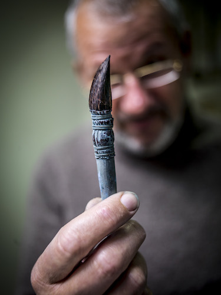

 Olphaert den Otter (Poortugaal, 1955) werd opgeleid aan de Willem de Kooning Academie (1976 - 1981). Werkt met eitempera, vaak in grote series. Eén daarvan, de Stal- en Kluismorfologieserie met 127 werken werd in 2008 getoond in Museum Boijmans Van Beuningen. Van tijd tot tijd maakt Den Otter wandtekeningen met pastel op lokatie (Malta Contemporary Art en de KetelFactory, Schiedam) en animatiefilms. Naast zijn praktijk als beeldend kunstenaar is hij countertenor in het Retorisch Kwartet en verzorgt hij veelvuldig lezingen over cultuur-filosofische thema's.